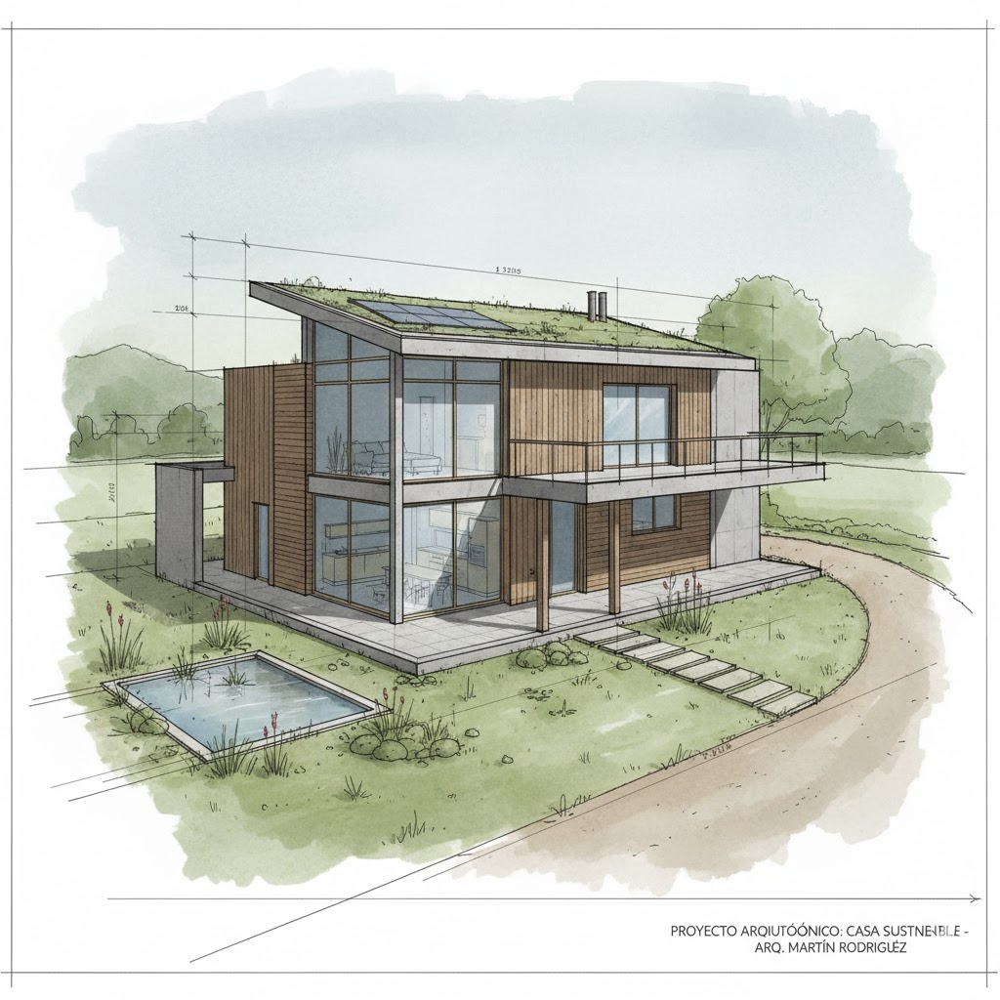
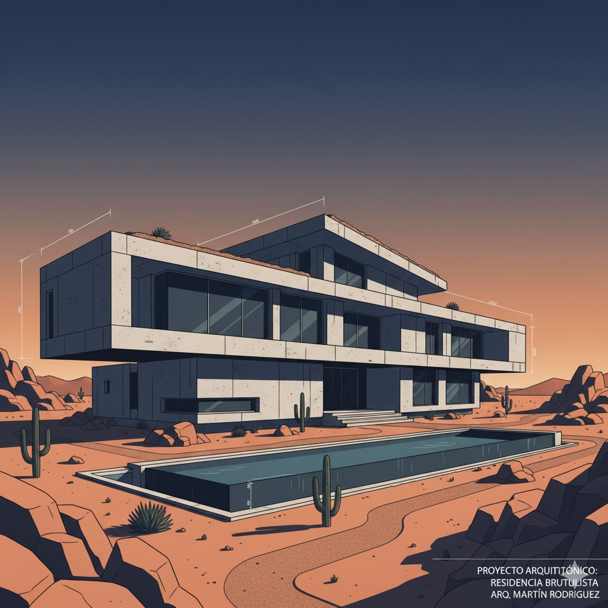

Conectamos arquitectos visionarios con el mundo. Tu portafolio, tu legado.
En PortArq, creemos que cada proyecto arquitectónico cuenta una historia única. Nuestra misión es proporcionar una plataforma digital de vanguardia donde los arquitectos puedan exhibir su trabajo, conectar con clientes potenciales y colaborar con otros profesionales del sector.
Nacimos de la necesidad de simplificar la gestión de portafolios y maximizar la visibilidad de los talentos emergentes y consolidados en el mundo de la arquitectura.

Impulsamos la creatividad y las nuevas ideas en cada diseño y funcionalidad de nuestra plataforma.
Fomentamos una red colaborativa donde el conocimiento y la inspiración fluyen libremente.
Nos comprometemos con la calidad, tanto en la tecnología que desarrollamos como en los proyectos que destacamos.
Desarrollo y Diseño